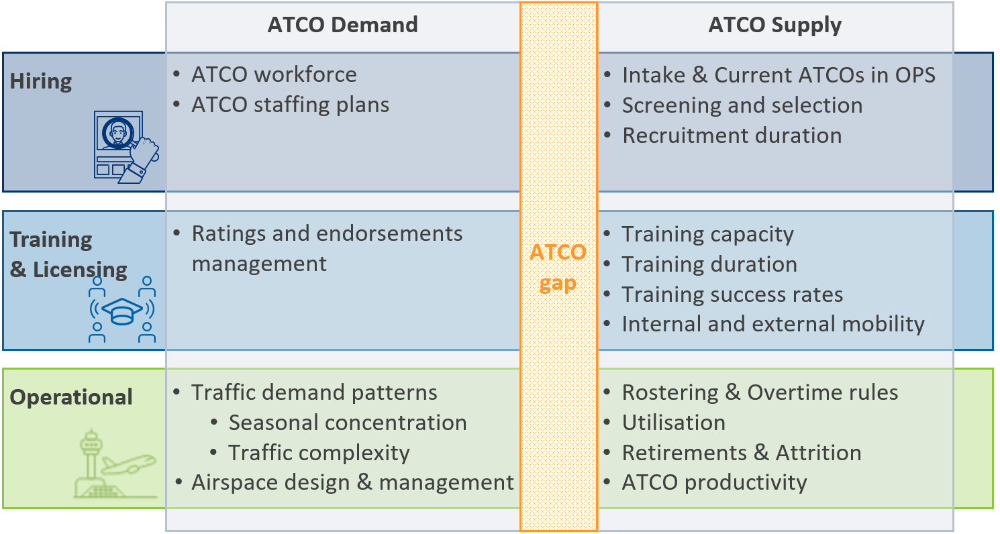

Modelling workforce supply and demand
Intermediate outlook to 2040
Using the findings from the analysis of macro trends and the logic of the ATCO management cycle model, we created a forecasting model that translates the macro trends and assumed parameters into ATCOs in OPS numbers. The model considers the period from 2025 to 2040, using all the available data sources to refine the forecast. The following sections explain the model and its key parameters, describe the assumptions and discuss the calculation outcomes. The functional model is delivered as an annex to this report and will be updated with the latest available data (as indicated in Chapter 1).
The model starts with the European Union’s forecast population and calculates the number of potential applicants for ATCO recruitment by applying the percentage of people aged 20-35. This percentage is calculated from the age distribution forecasts for 2030, 2035 and 2040, assuming linear annual changes for the intervening years. Further demographic inputs of the model include:
- The average retirement age is 60 years.
- The average starting age is 25 years.
- The average annual rate of ATCO attrition due to medical or other reasons is initially set at 1% of the incumbent population.
The average starting and retirement ages are considered from an operational perspective (i.e. when ATCOs begin working in operations and when they retire from operational work). These figures are used to determine the average annual retirement ratio of incumbent ATCOs, assuming a perfectly even distribution of the ATCO population across all ages (i.e. as if the number of ATCOs aged 25 was the same as the number of ATCOs aged 60). This results in an average retirement rate of 2.86% (the share of 60-year-old ATCOs in the incumbent population). However, because performance plans also include data on ATCOs stopping work in operations, these figures are used to calculate retirement rates and the number of retiring ATCOs for the period from 2025 to 2035.
The model is based on an array of operational and training assumptions, along with information collected from performance plans and interviews. The first set of these assumptions relates to the selection and recruitment phases of the ATCO management cycle and determines the following parameters:
Final report model to 2036
To address this question, the study developed a supply-demand model that estimates how the ATCO workforce is expected to evolve over time and compares that future workforce with the number of controllers required to accommodate projected traffic demand. The model provides a common analytical framework through which hiring, licensing, training and operational factors can be assessed consistently across the study scope and translated into a common measure of workforce imbalance.
The purpose of the model is not limited to forecasting future staffing requirements. Equally importantly, it provides a structured way of understanding why ATCO shortages emerge, how they evolve over time and which factors are likely to have the greatest influence on future controller availability. This enables the study not only to quantify potential workforce shortages, but also to assess the extent to which different operational, workforce and training measures could contribute to reducing them. The following figure illustrates the conceptual framework underpinning the model.

The model is centred on the relationship between two interconnected dimensions:
- Demand, representing the number of ATCOs required to accommodate traffic demand; and
- Supply, representing the number of ATCOs available to provide Air Traffic Services (ATS).
Both dimensions are influenced by factors arising throughout the ATCO management cycle. On the demand side, workforce requirements are shaped by operational considerations such as traffic patterns, airspace organisation, workforce deployment and the management of ratings and endorsements. On the supply side, workforce availability depends on the ability of the system to attract, recruit, train, license and retain controllers over time.
The interaction between these two dimensions determines the existence and magnitude of the ATCO gap, defined as the difference between the number of controllers required and the number available, measuring the ATCO numbers as FTEs (Full-Time Equivalent). As illustrated in Figure 7, ATCO shortages do not result from a single cause or a single stage of the lifecycle. Instead, they emerge from the combined effect of multiple factors operating across hiring, training, licensing, and operational activities.
This distinction is central to the analytical approach adopted in the study. By linking workforce challenges and potential solutions to the factors influencing either demand or supply, the model provides a consistent framework for assessing both the causes of future shortages and the potential effectiveness of different mitigation measures.
The model has been developed at ACC level, in order to allow specific local traffic, operational and workforce characteristics to be reflected within the analysis and the results to be actionable. Results are subsequently aggregated at ANSP and EU level to support the assessment of workforce trends across the SES.
The supply-demand model is therefore built around a limited number of variables that determine the evolution of both ATCO demand and ATCO supply over time. These variables were selected based on the literature review, the baseline datasets and the evidence collected through interviews and surveys, and represent the principal mechanisms through which workforce, training, licensing and operational factors influence the future availability of controllers.

Figure 8 illustrates the relationship between the model variables and the projected evolution of the ATCO workforce. The future workforce situation is determined by a combination of factors acting on both sides of the supply-demand balance.
On the demand side, the number of controllers required depends primarily on the level of traffic demand and on the operational capacity that each controller can provide. Variables such as ATCO productivity, utilisation and maximum staff hours determine how efficiently traffic can be accommodated and therefore influence the number of controllers required by the system.
On the supply side, workforce availability evolves through a combination of inflows and outflows. Recruitment volumes, training duration, training success rates and training capacity determine the number of new controllers entering operations, whilst retirements and attrition reduce the available workforce over time. Together, these variables shape the long-term evolution of controller availability across the European ATM network.
As shown in Figure 8, the model variables can be grouped into two broad categories; the first comprises external or partially controllable factors, which influence the future workforce balance but are largely outside the direct control of ANSPs; and the second one comprises controllable levers that can be influenced through workforce, training, licensing and operational policies.
This distinction is particularly important for the remainder of the study. Whilst the model quantifies the ATCO gap and its evolution, the objective of the analysis is ultimately to identify the interventions most capable of reducing it. Many of the challenges identified throughout the ATCO management cycle affect workforce availability because they constrain one or more of the model variables. Similarly, the solutions identified by stakeholders can be assessed according to the variables they influence and, consequently, their potential contribution to reducing future workforce shortages.